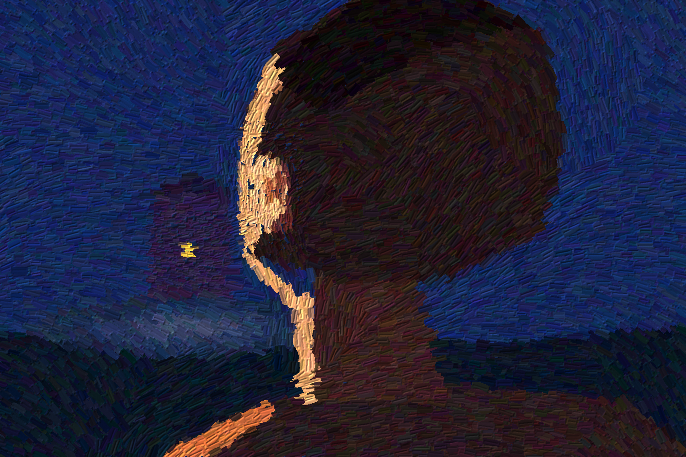

for whoever put it on
You cannot see his face. That is the arrangement.
The window is a yellow speck as far as a coin is from a hand,
and the whole warm back of him leans toward it
the way a plant leans, without an opinion.
Someone in there put the lamp on at six.
It was not for him. That is also the arrangement.
He will stand until the cold gets into him
and the edge of him, which is the only part lit,
goes out.
Then he will go home by the way he came,
carrying nothing, a little heavier.
2026. Painted in code with a bristle brush I built; no photograph, no image model.